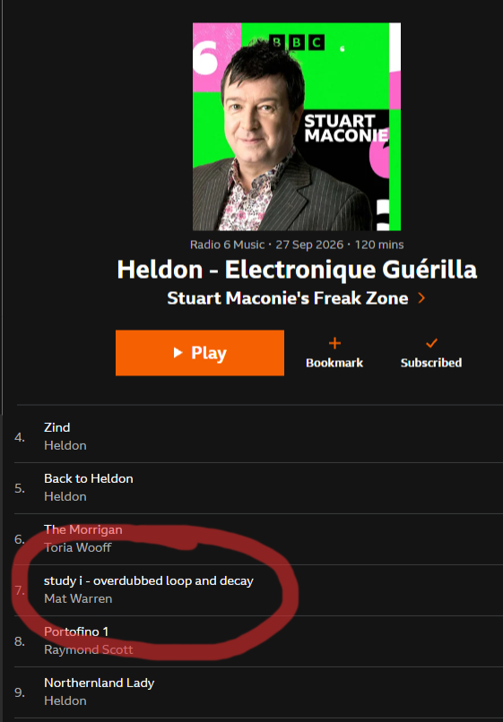
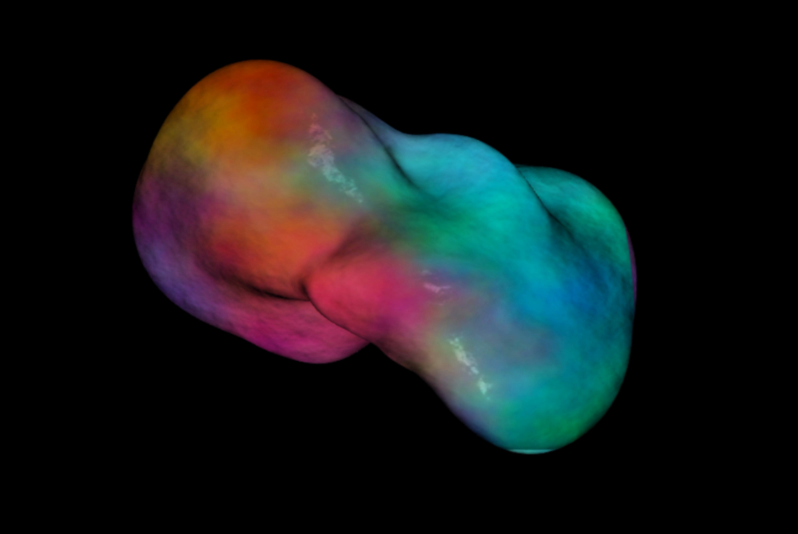
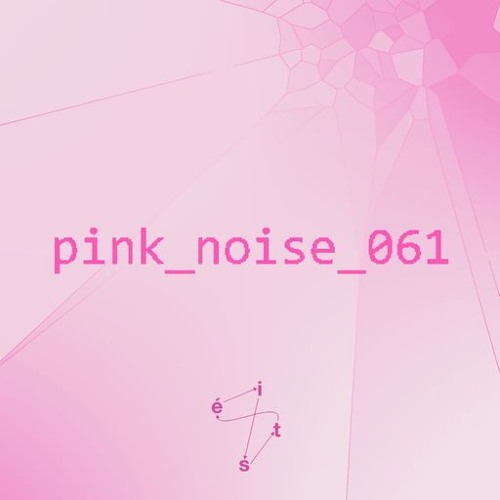
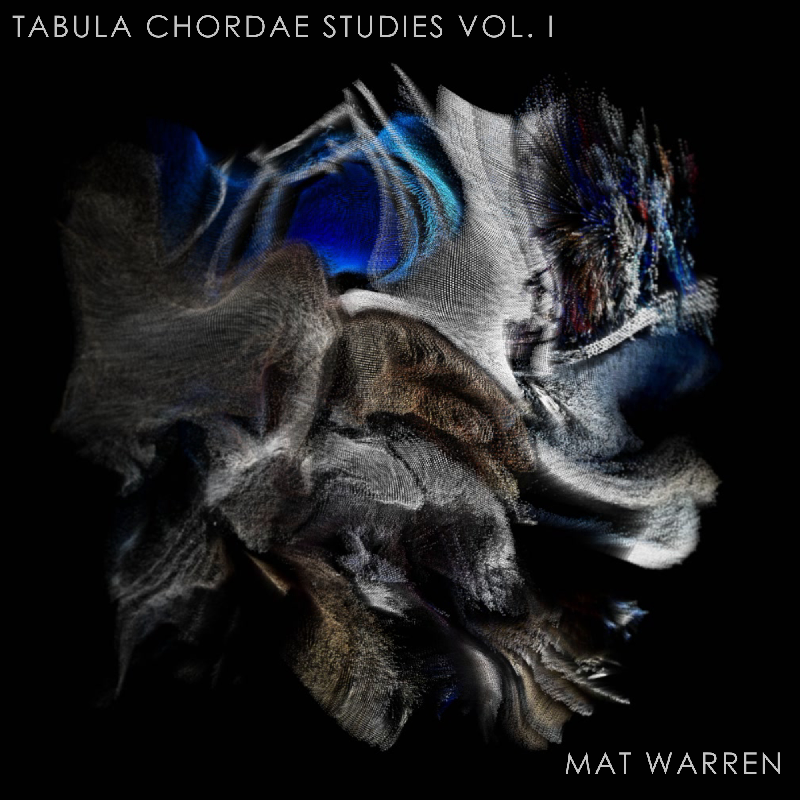

BBC RADIO 6 MUSIC
Stuart Maconie's FreakZone · 27.09.2026
Mat Warren is a musician, sound engineer and creative technologist based in Leitrim, Ireland. His work moves between sound, music, technology and performance. Through installations, releases, live productions and experimental systems, his practice explores the relationship between physical interaction and sound.

Stuart Maconie's FreakZone · 27.09.2026

Interactive audiovisual installation
18.09.2026

Radio Play - 15.07.26

Musical release · 2026
Radio Play - 20.05.26